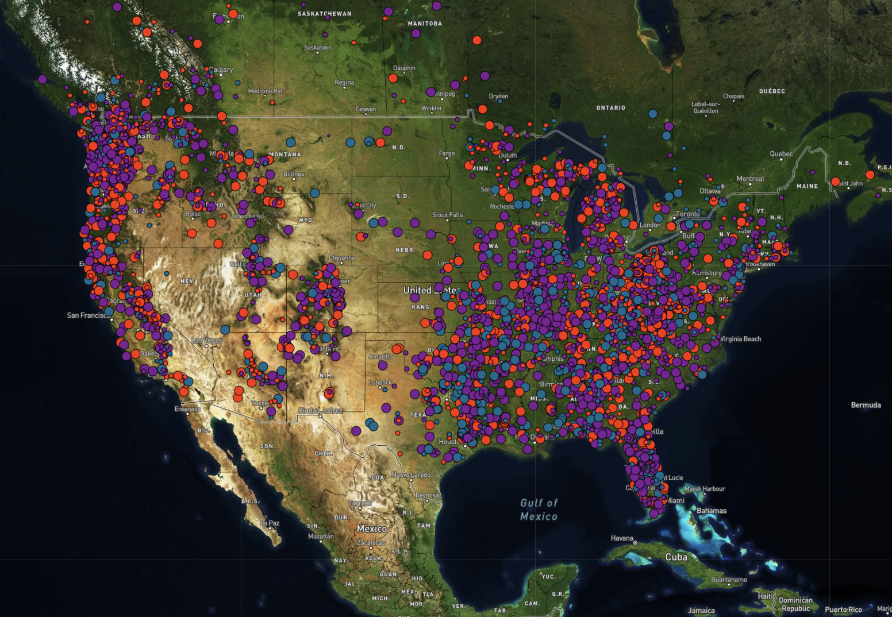

Mapping Bigfoot Sightings
In this map, bigfoot sightings are marked in white, with larger circles indicating a more reliable sighting. More information about each sighting is available by hovering over the icon.
Yellow dots indicate unique restaurant locations where tacos can be found.
About Bigfoot
Sightings of Bigfoot or Sasquatch have been reported in the US dating back to 1811, when British explorer David Thompson reporting finding footprints. Sasquatch is variably described as a primate ranging from 6 to 15 feet (2 to 4.5 metres) tall, standing erect on two feet, often giving off a foul smell, and either moving silently or emitting a high-pitched cry. Footprints have measured up to 24 inches (60 cm) in length and 8 inches (20 cm) in width. A Soviet scientist, Boris Porshnev, suggested that Sasquatch and his Siberian counterpart, the Almas, could be a remnant of Neanderthals, but most scientists do not recognize the creature’s existence.

Sasquatch is the anglicization of the name Sasq'ets, from the Halq’emeylem language spoken by First Nations peoples in southwestern British Columbia, roughly translating to " hairy man". Members of the Lummi tell tales about creatures known as Ts'emekwes. The stories are similar to each other in the general descriptions of Ts'emekwes, but details differed among various family accounts concerning the creature's diet and activities. Some regional versions tell of more threatening creatures: the stiyaha or kwi-kwiyai were a nocturnal race, and children were warned against saying the names so that the "monsters" would not come and carry them off to be killed. The Iroquois tell of an aggressive, hair covered giant with rock-hard skin known as the Ot ne yar heh or "Stone Giant" , more commonly referred to as the Genoskwa. In 1847, Paul Kane reported stories by the natives about skoocooms, a race of cannibalistic wild men living on the peak of Mount St. Helens in southern Washington.
Origin of the "Bigfoot" name
In 1958, Jerry Crew, a logging company bulldozer operator in Humboldt County, California, discovered a set of large, 410 millimetres (16 in) human-like footprints sunk deep within the mud in the Six Rivers National Forest. Upon informing his coworkers, many claimed to have seen similar tracks on previous job sites as well as telling of odd incidents such as an oil drum weighing 450 pounds (200 kg) having been moved without explanation. The logging company men soon began utilizing the term "Bigfoot" to describe the mysterious culprit. Crew, who initially believed someone was playing a prank on them, once again observed more of these numerous, massive footprints and contacted reporter Andrew Genzoli of the Humboldt Times newspaper. Genzoli interviewed lumber workers and wrote articles about the mysterious footprints, introducing the name "Bigfoot" in relation to the tracks and the local tales of large, hairy wild men. A plaster cast was made of the footprints and Crew appeared, holding one of the casts, on the front page of the newspaper on October 6, 1958. The story spread rapidly as Genzoli began to receive correspondence from major media outlets including the New York and Los Angeles Times. As a result, the term "Bigfoot" became widespread as a reference to an apparently large, unknown creature leaving massive footprints in Northern California.
About Tacos
The taco predates the arrival of the Spanish in Mexico. There is anthropological evidence that the indigenous people living in the lake region of the Valley of Mexico traditionally ate tacos filled with small fish. Writing at the time of the Spanish conquistadors, Bernal Díaz del Castillo documented the first taco feast enjoyed by Europeans, a meal which Hernán Cortés arranged for his captains in Coyoacán.
Etymologies for the culinary usage of the word are generally theoretical. One possibility is that the word derives from the Nahuatl word "tlahco", meaning "half" or "in the middle," in the sense that food would be placed in the middle of a tortilla. Furthermore, dishes analogous to the taco were known to have existed in Pre-Columbian society—for example, the Nahuatl word "tlaxcalli" (a type of corn tortilla).
According to Jeffrey M. Pilcher, professor of history at the University of Minnesota, tacos started to become a mainstream food between 1910 and 1920 when children of immigrants from Mexico (who came to work the mines and railroads) started to advance economically.
Why Bigfoot and Tacos?
Nothing complicated - I like the idea of bigfoot, and who doesn't love tacos?
Also, who wouldn't want to know the best local spot to get tacos while on your bigfoot hunting expedition? They're like the most perfect portable food. Food wrapped in food. Though not good to eat while driving, second worst food to eat while driving right after spaghetti. I will not be taking questions about that.
Monsters, monsters don't love tacos. Bigfoot is not a monster.
Project plan...
Phase 1
A data set was obtained from data.world - a datatset that Timothy Renner obtained by datascrapping the BRFO website ranging from 1925 to 2004; broken down into three classifications of "quality" of sighting.
A secondary dataset was pulled from kaggle which was supposed to contain a list of 19,439 restaurants and similar businesses with menu items containing "burrito" or "taco" in their names. Data was to be cleaned and analyzed for geographical similarities in locations - between the datasets and within the bigfoot sightings.
Machine learning would be used to find patterns in the bigfoot sightings, and all locations would be mapped. Questions to be answered included:
- Can bigfoot sightings be predicted based on historical data?
- Are there similarities in bigfoot sighting hotspots and taco locations?
Issues that arose through data exploration:
- Bigfoot sighting data comes from self-reporting from not-biologists.
- Many sightings were reported long after the "sighting" occured - sometimes years.
- Most of the "taco" data was anything but tacos.
Phase 2
Merge the datasets and run more machine learning and see what happens.
Preparing the data...
Text about preparing the data...
Morre text.
Results...
Phase 1
There are reported bigfoot sightings in every state in the US aside from Hawaii. Non-chain taco establishments can probably be found in every state in the US, though my list did not have any that made the cut in Alaska, North Dakota, South Dakota, or Vermont. The inital maching learning algorithm could not make predicitions on bigfoot sighting locations more accurate than 52%(slightly better than a coin flip), and refining the data to only include the "Class A" sightings, listed on the brfo website as:
"Class A reports involve clear sightings in circumstances where misinterpretation or misidentification of other animals can be ruled out with greater confidence. For example, there are several footprint cases that are very well documented. These are considered Class A reports, because misidentification of common animals can be confidently ruled out, thus the potential for misinterpretation is very low."
dropped accuracy to 11%.
Attempts to visually identify possible migration patterns by color coding the sighting data based on season were all unimpressive, resulting in a colorful mismosh with no pattern discernable to the human eye.
Phase 2
MORE RESULTS
Sources
Bigfoot Sources
Taco Sources